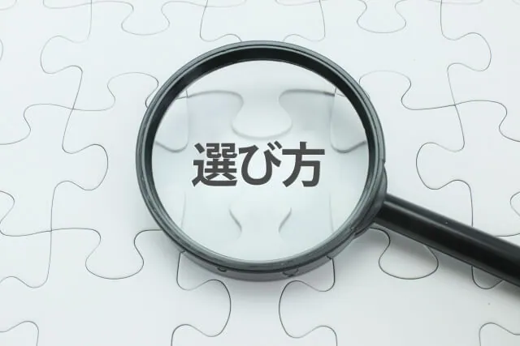

「宿泊施設やキャンプ場にサウナを導入したい」「アウトドアサウナの導入で集客や顧客満足度を向上させたい」など、お悩みではありませんか？
こちらでは業務用アウトドアサウナの導入メリット、バレル・テント・コンテナサウナの特徴、販売サイトの選び方と導入の流れについて詳しく解説します。宿泊施設やキャンプ場の魅力を高め、競争力を強化するためのポイントを具体的に紹介します。
高品質な国産ひのき材を使用したバレルサウナを提供するRink SAUNAが、豊富な導入実績をもとにお届けする情報です。最後まで読めば、施設に最適なアウトドアサウナの選び方がわかり、導入に向けた具体的なステップが明確になります。
業務用アウトドアサウナ導入のメリット：集客・満足度・ブランド力向上
近年のサウナ需要の増加は、宿泊施設やキャンプ場といったレジャー施設にも大きな影響を与えています。業務用サウナの導入は、従来の枠を超えた魅力的な体験を提供し、集客力アップが見込めます。
サウナが宿泊施設やキャンプ場の集客力を向上させる理由
サウナが宿泊施設やキャンプ場の集客力を向上させる理由について解説します。
宿泊施設やキャンプ場での付加価値向上
まず、サウナは他の施設との差別化を図る強力なツールです。近年はグランピングをはじめ、宿泊施設やキャンプ場は多様化しています。「サウナがある」という点は、顧客が宿泊施設やキャンプ場を選ぶ際の有効な決め手となり、集客効果を高めます。
特に、自然の中で楽しむアウトドアサウナは、特別な体験を求める顧客のニーズに応える魅力的なコンテンツといえるでしょう。
お客様の満足度・滞在時間の向上
また、サウナは顧客の満足度と滞在時間を向上させます。サウナでリラックスした時間を過ごせることは、顧客にとって大きな付加価値です。満足度の向上はリピーター獲得にもつながり、SNS上の拡散や口コミ効果によるさらなる集客も期待できます。
さらにサウナ後の休憩時間も含め、施設内での滞在時間が長くなることは、飲食や物販などの売上増加にも貢献するでしょう。
サウナ類型も、常設型、屋内小型サウナ、バレルサウナ（屋外樽型）、テントサウナなどいろいろあり、比較検討することも必要です。顧客のニーズに合わせたサウナの種類を選択することで、さらなる集客効果を見込めます。
施設のブランディング強化につながるサウナ導入の魅力
アウトドアサウナの導入は、施設のブランドイメージを刷新し、競合との差別化を図るうえで大きな効果を発揮します。「自然との共生」「健康志向」「特別な経験」といった現代社会で求められる価値を提供することで、施設のコンセプトと融合し、ブランド力も向上します。
たとえば、最高級の国産ひのき材を使用したバレルサウナを設置することで、環境意識の高くハイエンドの顧客層へのアピールも期待できます。またサウナはリラクゼーションとして人気があり、多くの方が健康志向の一環として意識しているため、健康志向の高い顧客を獲得できます。
| 訴求ポイント | ターゲット | 具体的な施策例 |
|---|---|---|
| 自然との共生 | 環境意識の高い顧客 |
|
| 健康志向 | 健康を重視する顧客 |
|
| 特別な経験 | 非日常を求める顧客 |
|
これらの施策とサウナを組み合わせることで、他には真似できない特別な宿泊体験を提供し、顧客の記憶に残る施設となるでしょう。結果として、SNSでの口コミやメディア露出によるPR効果も期待でき、さらなるブランドイメージの向上につながります。
業務用アウトドアサウナの特徴と選び方（バレル・テント・コンテナなど）

業務用アウトドアサウナを設置することは、宿泊施設やキャンプ場にとって大きなメリットとなります。お客様の満足度・滞在時間を向上させ付加価値を生み出すことで、リピーター獲得や口コミ効果による集客力アップが可能です。
ここでは、サウナの種類とそれぞれの特徴を解説します。オンラインで販売されているサウナの種類を検討し、導入したい施設の雰囲気や規模、予算に合った最適なサウナを選びましょう。
| 種類 | 特徴 | （商用）設置場所の例 |
|---|---|---|
| バレルサウナ |
|
民泊貸別荘、リゾートホテル（ヴィラ）、グランピング施設、キャンプ場、保養所、旅館、温浴施設など |
| テントサウナ |
|
多様なキャンプ場、イベント会場 |
| コンテナサウナ |
|
大規模キャンプ場、ポップアップ型、体験型イベントの施設 |
それぞれのサウナには特徴があります。バレルサウナは、その独特のフォルムが魅力で、自然の中に溶け込みやすいというポイントがメリットです。テントサウナは、持ち運びや設置が容易なため、イベントなどでの利用にも適しています。コンテナサウナは、シャーシ（台車）に載せることでトレーラー式に移動が可能で、シャワー・休憩室などの内装までさまざまなカスタマイズもできます。ポップアップ型、体験型イベントの施設に最適です。
長期的な視点がカギ！業務用サウナに求められる「耐久性」とコスト
業務用としてサウナをアウトドア施設に導入する場合、初期費用の安さだけで販売サイトを選んでしまうのはリスクがあります。不特定多数のお客様が連日利用する業務用サウナは、家庭用とは比較にならないほどの負荷がかかるためです。
例えば、安価で簡易的なテントサウナは導入しやすい反面、断熱性の低さによる光熱費の増大や、早期の劣化による買い替えコストが発生する可能性があります。一方、厚みのある木材を使用した国産バレルサウナなどは、初期投資こそ必要ですが、耐久性が高くメンテナンス頻度も低く抑えられるため、長期的な視点で見るとコストパフォーマンスに優れているケースが少なくありません。
- 耐久性：頻繁な使用や風雨に耐えられる構造か
- 素材：湿気や腐食に強い木材（国産ひのき等）か
- ランニングコスト：断熱性が高く、熱効率が良いか
事業として長く安定した収益を生むためには、目先の「安さ」よりも、資産として残る「丈夫さ」を重視した選び方が成功への近道です。
導入を成功させるアウトドアサウナ販売サイトのチェックポイント
アウトドアサウナを導入する際は、販売サイトの情報をしっかり確認することが大切です。特に業務用で利用する場合、購入後のサポート体制や保証の有無が安心材料になります。
チェックすべき主なポイントは次のとおりです。
- サウナの種類が豊富か：バレルサウナ、テントサウナ、コンテナサウナなど複数の種類を扱っているか
- 導入実績や事例の公開：宿泊施設やキャンプ場など、同業種の導入例が紹介されていると安心
- 価格や仕様の明確さ：サイズ、材質、価格帯がわかりやすく記載されているか
- アフターサービス：保証内容や修理対応が具体的に明記されているか
販売サイトの情報を比較することで、自分の施設に最適なアウトドアサウナを安心して選ぶことができます。Rink SAUNAでも、国産ひのきを使用したバレルサウナを中心に、豊富な種類を取り揃えています。導入を検討中の方は、ぜひこちらから製品一覧ページをご覧ください。
アウトドアサウナの販売サイトを利用する際はサポート体制をチェック
「宿泊施設やキャンプ場にサウナを導入したいけど、もし故障したら？」「運用で困ったことがあったら、どこに相談すればいいの？」
アウトドアサウナは大きな設備投資だからこそ、導入後のサポート体制は重要です。販売サイトを見る際には、万が一の「困った！」を解決してくれる、信頼できるサポートがあるかどうかもチェックしましょう。販売サイトで確認すべきサポート体制のポイントは、以下のとおりです。
アフターサービスの内容
故障時の修理対応や、部品の取り寄せ、交換について、どのようなサービスが提供されているかを確認しましょう。保証期間や、保証対象となる範囲が明確に記載されているかも重要です。
緊急時の連絡体制
万が一のトラブルが発生した際に、すぐに連絡が取れる窓口があるか、対応時間はどのくらいかを確認しておくと安心です。特に、宿泊施設やキャンプ場では、お客様の利用中にトラブルが起こる可能性も考慮し、迅速な対応が期待できる販売サイトを選びましょう。
これらのサポート体制を事前に販売サイトでしっかりと確認することで、アウトドアサウナ導入後の不安を解消し、安心してビジネスに集中できるようになります。
失敗しない！業務用アウトドアサウナの販売サイト・導入の流れ
業務用アウトドアサウナの導入を検討する宿泊施設やキャンプ場が増えています。サウナは、お客様の満足度と滞在時間を向上させるだけではありません。口コミ効果による新規顧客の獲得にもつながり、付加価値の高い設備投資として注目されています。
導入を成功させるためには、適切なメーカー選定とスムーズな導入プロセスが不可欠です。導入ステップは以下の通りになります。
| 導入ステップ | 詳細 |
|---|---|
| メーカー調査 | 業務用サウナを販売している業者のサイトを確認し、導入する商品を選定 |
| 問い合わせ | サイトから問い合わせフォーム、または電話で連絡 |
| 計画・相談 | 設置場所、熱源の種類、予算などの相談を担当者とお打ち合わせ |
| 見積 | 正式な見積書を取得 |
| 発注・契約 | サウナを発注し、契約を締結 |
| 設置工事 | 専門業者による設置工事 |
| 検査 | 消防・保健所の検査 |
| 稼働開始 | サウナの稼働開始 |
まず、導入実績が豊富なサウナを取り扱うメーカーを選びましょう。バレルサウナ、テントサウナ、コンテナサウナなど、さまざまな種類があるので、施設のコンセプトや規模に合ったサウナを導入事例でイメージすることが有効です。
サイト上では、サウナのサイズ・材質・価格などの基本情報だけでなく、口コミや評判なども確認しましょう。特にバレルサウナについて使用木材や生産地、加工技術、気密性、長寿命などによって金額差が大きいため、総合的に選定が必要です。
次に、導入の流れを把握しましょう。多くのサウナメーカーでは、問い合わせフォームや電話での相談を受け付けています。サウナの種類や設置場所、予算などを伝え、具体的なプランを提案してもらいましょう。設置場所の確認や法的規制の確認など、導入前に確認すべき事項を専門家と相談することで、スムーズな導入につながります。
導入後のサポートや定期的なメンテナンスも大切です。各メーカー製品の耐久性と導入後のメンテナンス体制などを確認し、安心してサウナを運用できるようにしましょう。
業務用アウトドアサウナの購入・ご相談はRink SAUNAまで
特別な時間を演出する業務用アウトドアサウナを導入しませんか？Rink SAUNAのバレルサウナであれば、国産ひのきの豊かな香りで包み込みながら、極上のリラクゼーション体験を提供できます。鎮静作用、抗菌・ウイルス、防腐・防虫性・消臭性に優れた高品質なひのき材を使用し、耐久性に優れた設計で、長期間安心してご利用いただけます。
宿泊施設やキャンプ場の魅力をさらに高め、集客力や顧客満足度の向上に貢献するアウトドアサウナは、多くの施設に導入されています。Rink SAUNAでは、お客様のニーズに合わせた迅速な納品と確実な納期順守を徹底。自社国内生産と効率的な木材調達により、高品質ながらリーズナブルな価格を実現しました。
アウトドアサウナの導入を検討中の方は、まずはお気軽にお問い合わせください。特別な空間を創出し、ビジネスに新たな価値を加える一歩を踏み出しましょう。
Rink SAUNAが販売しているアウトドア向けサウナが選ばれる理由
Rink SAUNAが多くのアウトドア施設やこだわりのある個人様に選ばれているのは、単に製品を販売しているからではありません。木材のプロとして、お客様が施設運営のためにかける投資を「失敗」させないための確実な理由があります。
林業から販売までの一貫体制による高い投資価値
宮崎県での伐採から製造までを自社で行う「6次産業化」を実現しました。中間マージンを排除することで、最高級の国産ひのきを使用した高品質なサウナを、適正な価格で提供しています。本物の質を求める方にこそ、このコストパフォーマンスを実感していただけるサウナです。
納期遅延ゼロの信頼と充実の国内サポート
サウナ業界で深刻化している納期トラブルや連絡不通のリスクを、国内自社工場による一貫した供給体制によって完全に解消しました。
そのため、これまで当社都合による納期遅延は一度もありません。国内自社工場で管理しているため、確実な納期がお約束でき、万が一の部品保証やメンテナンス体制も十分にご用意しています。
独自の構造と多様な種類でビジネスを加速
特許申請中の構造による高い断熱性と、国内では珍しいガスストーブを含む豊富な選択肢が強みです。業務用としても耐えうる耐久性を備え、施設の集客力を最大化する「目玉設備」として、多くの経営者様から高く評価されています。
導入後の収益化や複雑な設置手続きについても、専門スタッフが親身にサポートしています。あなたの理想のサウナを形にするパートナーとして、ぜひ、Rink SAUNAで販売しているサウナをご検討ください。